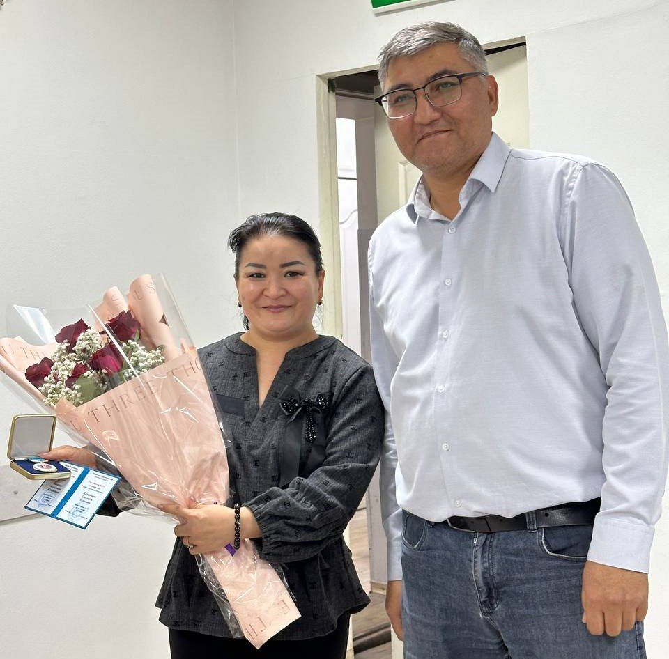
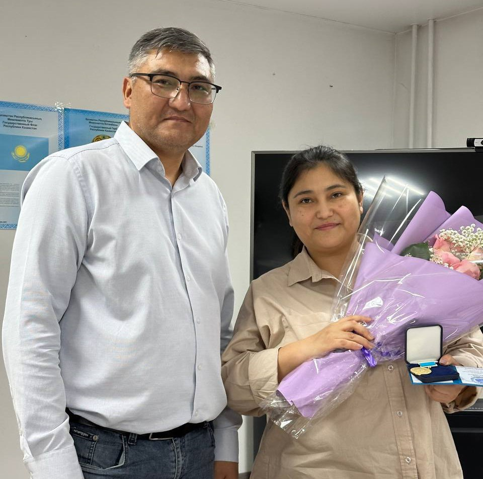
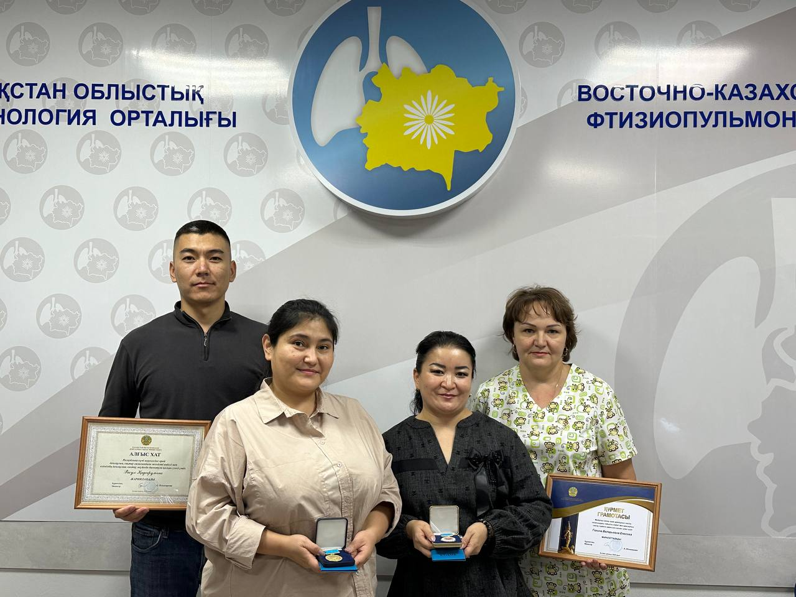
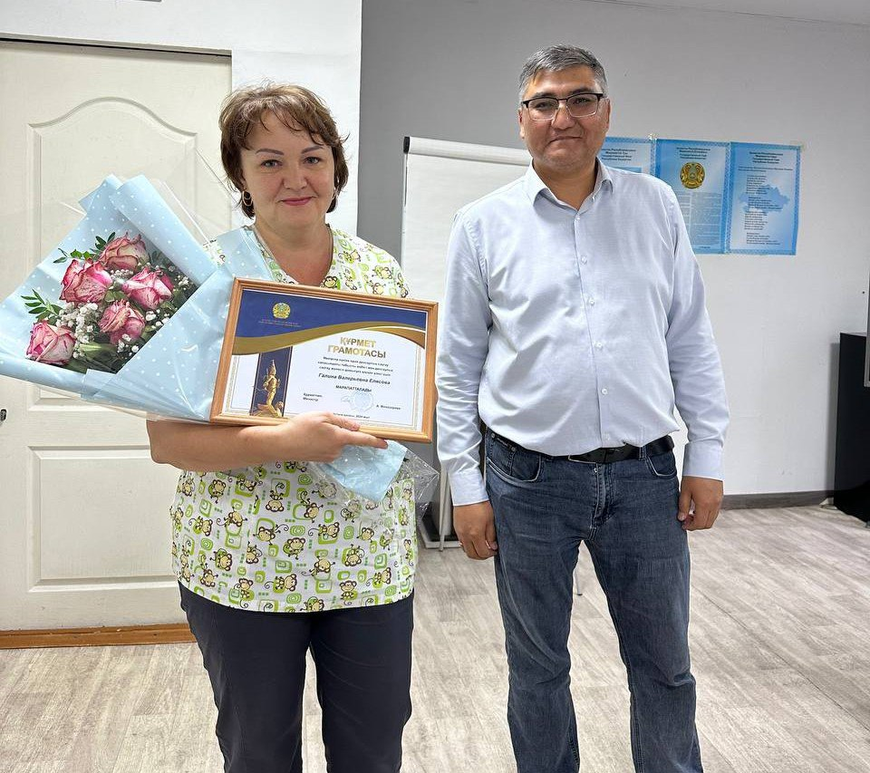
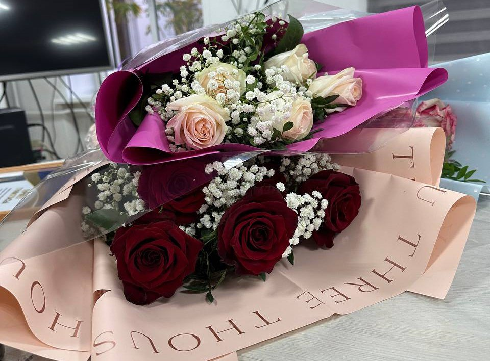
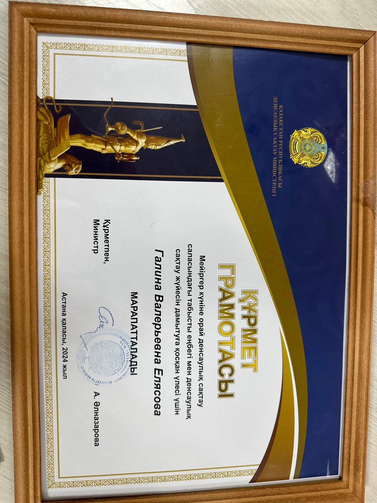
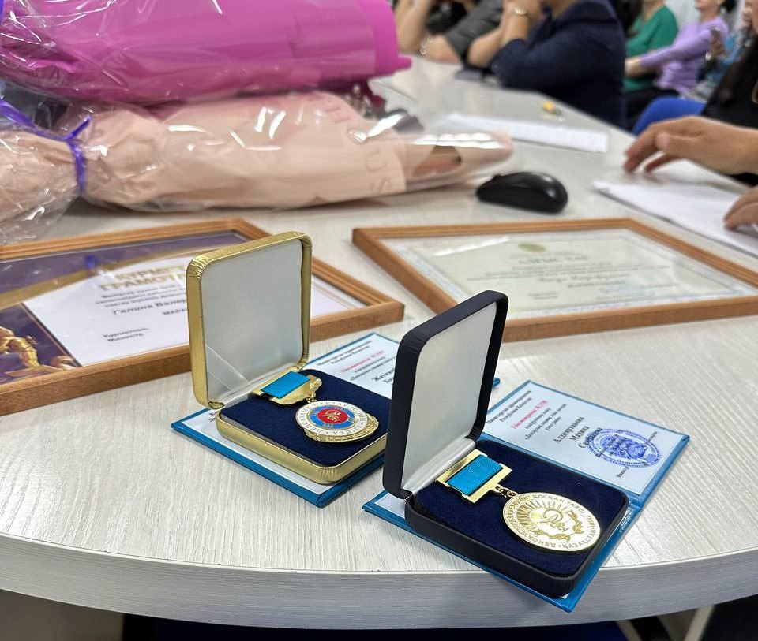
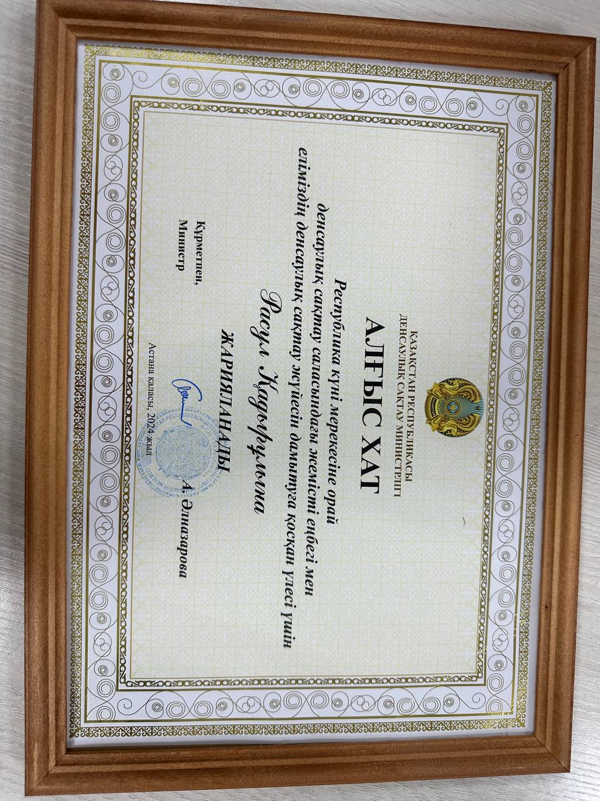

Жаңалықтар
Еліміздің ең салтанатты мерекелерінің бірі - Республика күні қарсаңында біздің орталықтың қызметкерлері ведомстволық наградалармен марапатталды.
24 октября 2024
Қалалық туберкулезге қарсы іс-шаралар мониторингі және бағалау тобының екі фтизиатры - Бақытгүл Жатқамбаева мен Мадиана Алдиярханова «Денсаулық сақтау ісінің үздігі» төсбелгісімен марапатталды.
Двое наших врачей фтизиатров городской группы мониторинга и оценки противотуберкулезных мероприятий - Бакытгуль Жатканбаева и Мадиана Алдиярханова награждены нагрудными знаками «Денсаулық сақтау ісіның үздігі”.
 Хирург Расул Қадырұлы мен қан кабинетінің медбикесі Галина Елясова Қазақстан Республикасы Денсаулық сақтау министрінің Құрмет грамотасымен марапатталды.
 Біз әріптестерімізді еңбек сіңірген наградаларымен құттықтаймыз!

Барша қазақстандықтарды Республика күнімен құттықтаймыз!
Денсаулық пен бақ-береке, бақыт пен барлық бастамаларыңызға табыс тілейміз! Сүйікті Қазақстанымыз бейбітшілік пен бірлікте гүлдене берсін!
#деньреспублики #республикакүні
  